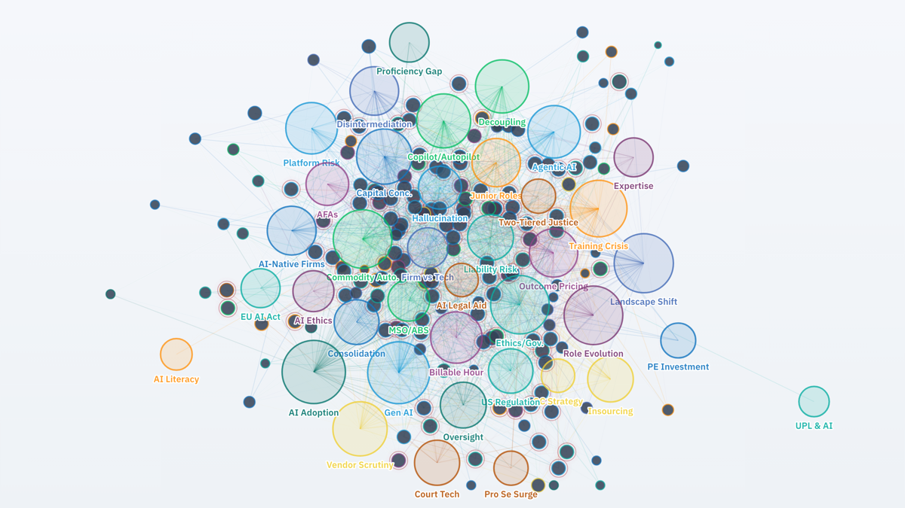
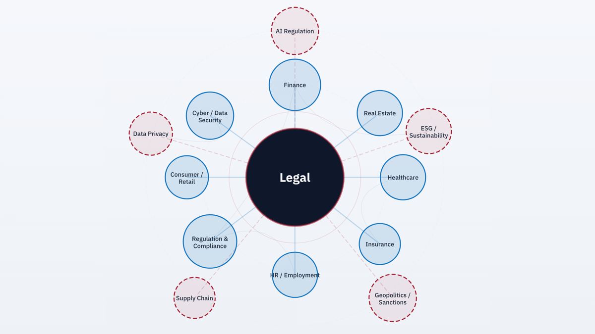
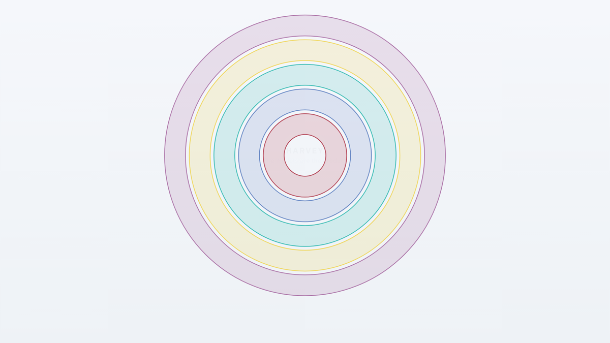
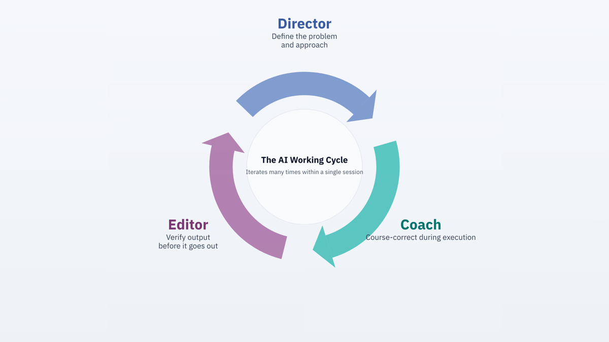
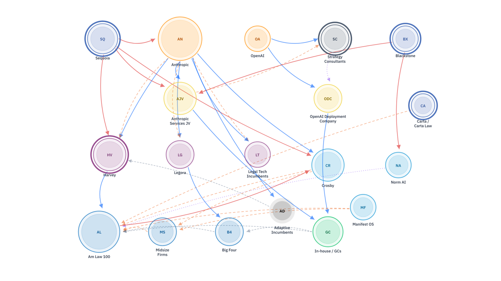
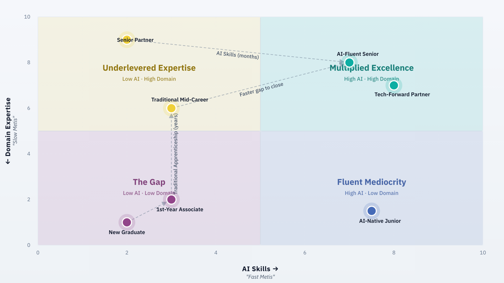
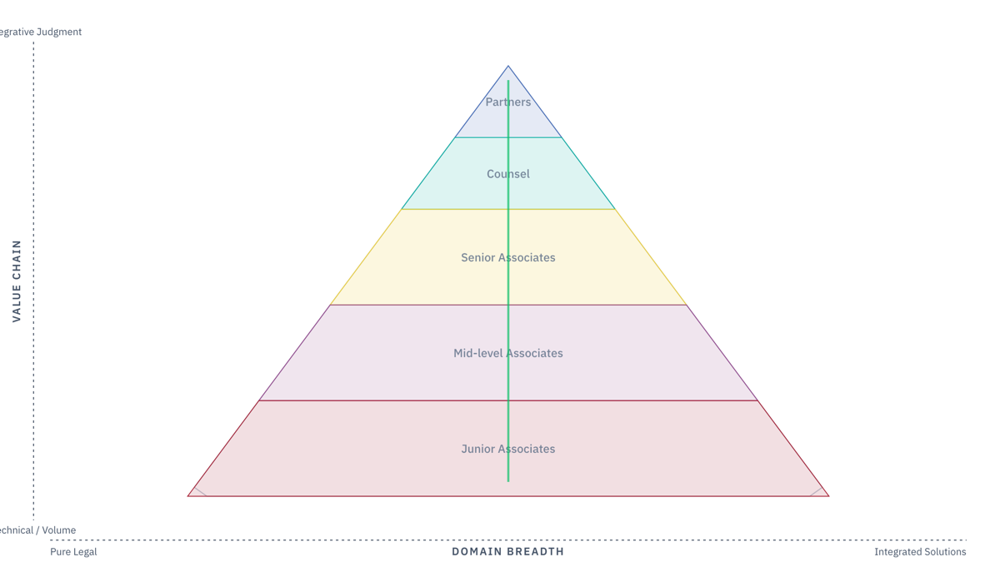

A living essay-and-visualisation series on how artificial intelligence is reconfiguring how legal services are delivered, who delivers them, how lawyers are trained, and what professional judgment becomes — read as a system, through many lenses at once.
Each reads the same transformation through a different lens — and each pairs with an interactive visualisation.

Why this series exists, what each of us brings to it, and how AI, complex decision-making, and the structure of the legal profession intersect. Start here.
Read the introduction→16 min
Law's structural position — at the centre of business, connecting every function — makes it the natural entry point for AI across professional services.
Read essay→10 min
What the most-discussed legal-AI company actually appears to be building — and why reading it as a "ChatGPT wrapper" misses the strategic thesis.
Read essay→11 min
From analysing the system to experiencing it — what it actually feels like to work with AI agents on complex intellectual tasks, and why that gap matters.
Read essay→18 min
AI is scrambling the competitive map so thoroughly that the old categories of incumbent and challenger no longer hold. The kinds of player on the field.
Read essay→12 min
The four ingredients of good AI outcomes — and why the profession is quietly removing the scarcest one from the production process.
Read essay→10 min
If AI automates the base, where does the top go? Firms moving upmarket aren't heading for unoccupied territory — and the ladder is collapsing behind them.
Read essay→11 min